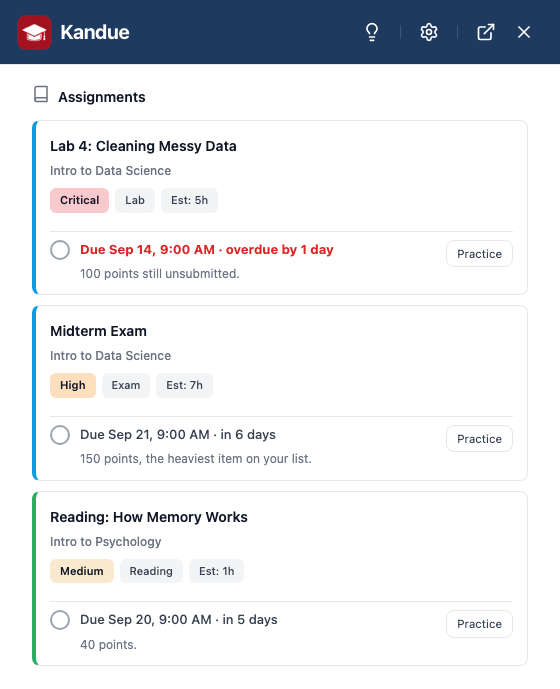
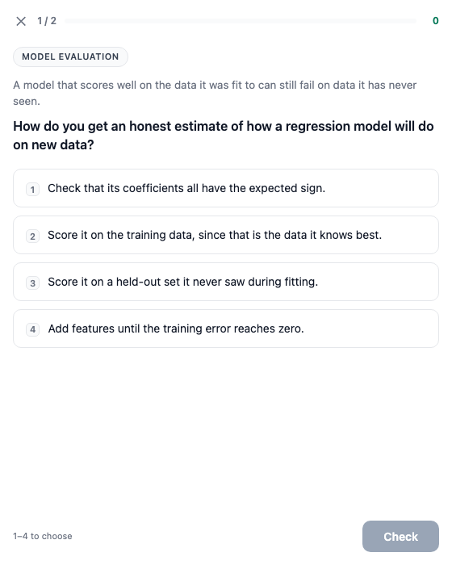
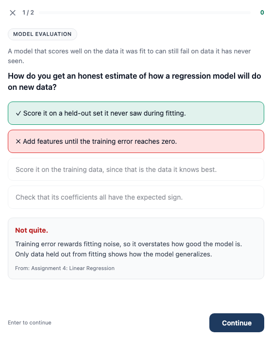
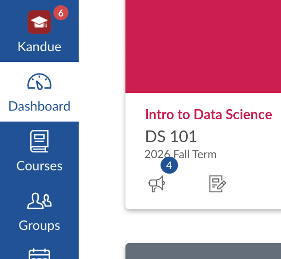

Canvas scatters your deadlines. Kandue gathers them.
Assignments sit in different courses and modules, across however many tabs you have open. Kandue reads them through Canvas's own API on your logged-in session (no API key, no password) and puts what's due in one place you can open on any page.
One deadline dashboard
Overdue, due today, and coming up across every course, sorted by what needs you first.
Ranked priorities
Your week's work ordered by what matters first, each with a reason and an hour estimate. Computed in the panel with no waiting, and the estimates adjust as you report how long things really take.
Practice quizzes
Turn a course, an assignment, or the page you're reading into a quiz that makes you commit to an answer before revealing the right one. Written by Chrome's built-in AI on your own computer, from your material rather than a question bank.
Long posts, shorter or in your language
Instructors write long. Get the key points of an announcement or an assignment brief, or read either one translated into your own language. Both run on Chrome's built-in AI, on your machine.
In Canvas's own nav
Adds itself to Canvas's left nav with a badge counting what needs attention, so there's no extra app to open.
No Kandue server
Kandue has no backend and no account to create, and no database of ours holds your coursework. Assignments are read from your school's Canvas straight into your browser and stay there. Ranking happens in the extension, and quizzes are written by Chrome's own AI model on your computer. Your school's Canvas is the only server Kandue contacts.
See it
A panel that sits beside the page you're on, or over it if you'd rather. Read your deadlines, see what to start, and quiz yourself without leaving Canvas.

Know what to start
Your week ranked by what actually matters first, each task with an hour estimate and one line on why it's there. Tell it how long something really took and the estimates adjust to you.

Quiz yourself on it
Commit to an answer first, then see the explanation. Works on a course, an assignment, or the page you're reading.

Built from your course
Every question traces back to your own assignment, syllabus, or page, and the explanation says which.

In the Canvas nav
One click from the Canvas nav, and a badge on the toolbar button counting what's due.
Install
1 Add to Chrome
- Open the Kandue listing on the Chrome Web Store.
- Click Add to Chrome and confirm.
- Open Canvas. Kandue appears in the left nav, and the toolbar button opens the panel on any tab.
2 Connect Canvas
- On any Canvas page, open Kandue and let Settings auto-detect your Canvas instance.
- That's the whole setup. Deadlines and priorities work immediately.
Requirements
- Google Chrome or a Chromium-based browser
- An active Canvas LMS account (your school's Canvas)
- For practice quizzes only: a desktop Chrome that can run its built-in AI model (Chrome 138+ on Windows, macOS or Linux, with enough free disk space and memory). Kandue tells you in Settings whether yours can. Deadlines and priorities work on any Chrome.
Common questions
Does it work with my school's Canvas?
If your Canvas lives on a .edu address or on instructure.com, yes, Kandue detects it automatically. If your school uses its own domain, you can enter it in Settings and grant access to that one site. Kandue works with the login you already have, so there's no separate account and no API key to request.
Do I have to give it my Canvas password?
No, and there is no way to. Kandue reads Canvas through your browser's existing logged-in session, the same way the Canvas site itself does. It never sees your password, and there's no API key to generate.
Where does my coursework go?
Nowhere. It's read from your school's Canvas into your browser and stays there. There is no Kandue server and no account to create, because the extension is the whole product. The AI features run on a model inside Chrome, on your own computer, so even those send nothing. Full detail in the privacy policy.
Is the practice quiz cheating?
No, and it can't become that. Questions come only from learning material: a syllabus, an assignment description, or the page you're reading. The code never calls the Canvas endpoint that holds real quiz questions, so there is nothing to point it at. It writes practice questions on the subject for you to test yourself against.
Canvas has its own AI study tools now. How is this different?
Instructure sells AI-generated flashcards and practice quizzes, but only in its top Canvas tier, which most schools don't buy. For most students those tools aren't actually there. Kandue's practice quizzes work regardless of what your school purchased, and they are generated on your own computer instead of a vendor's servers. They cost nothing.
Can my school or instructor tell I'm using it?
Kandue makes the same kind of requests to Canvas that your browser already makes when you use the site, so there is no Kandue-specific reporting. It sends nothing to us, because there's nowhere to send it, and it never writes to Canvas either.
Why don't I see the quiz or summarize buttons?
Those run on Chrome's built-in AI model, which needs a desktop Chrome with room to store the model (roughly 22GB free space, and either a 4GB+ graphics card or 16GB of RAM). Kandue checks and tells you in Settings, and hides the buttons instead of showing ones that fail. Your deadlines and priorities work on any Chrome regardless.
Does it work on my phone?
Not yet. Chrome extensions don't run on Chrome for Android or iOS, and Kandue is a desktop browser extension.
Is it free? What's the catch?
Free, with no paid tier and no ads. There's no server to run and no inference to pay for, which is exactly why it can stay that way.
Questions or feedback?
Found a bug, or want something built? It becomes a public issue you can follow. Takes a free GitHub account.